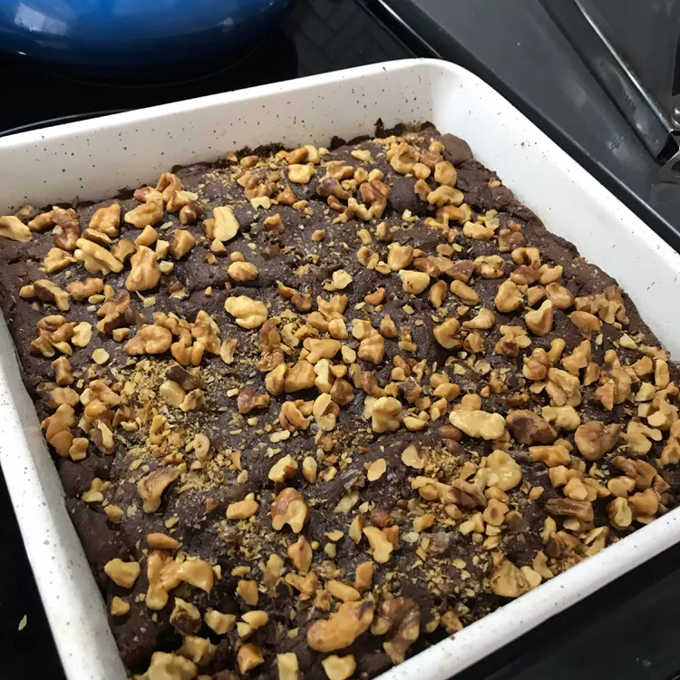

Brownie

Protein brownies are rich, chocolatey treats made with added protein
powder to boost their nutritional value. They offer the indulgent taste of
traditional brownies while supporting muscle recovery and a healthy lifestyle.
Ingredients
- 1 cup mixed nuts
- 1 cup brown sugar
- 1/2 cup flaxseed oil
- 1/4 cup unsalted butter, softened
- 3 eggs
- 2 tsp vanilla extract
- 1 cup almond flour
- 3/4 cup unsweetened cocoa powder
- 1/4 cup all-purpose flour
- 2 oz 70% dark chocolate, small pieces
- 2 tsp baking powder
Steps
- Preheat oven to 350F or 175C. Grease a 9-inch baking pan.
- Spread mixed nuts onto a baking sheet.
- Toast in preheated oven until nuts start to turn golden brown
and become fragrant, 10 to 12 minutes. Let cool.
- Mix brown sugar, flaxseed oil, and butter together in a bowl until creamy.
Add eggs, 1 at a time, whisking well after each addition. Stir in vanilla
extract. Add 2/3 cup toasted nuts, almond flour, cocoa powder, all-purpose
flour, dark chocolate, and baking powder; mix batter well.
- Pour batter into the prepared baking pan. Sprinkle remaining 1/3 cup
toasted nuts on top.
- Bake in the preheated oven until a toothpick inserted into the center comes out
clean, about 20 minutes.
Home